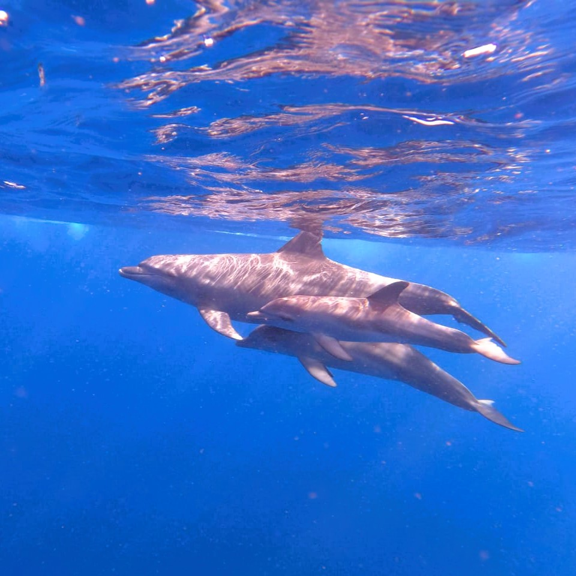
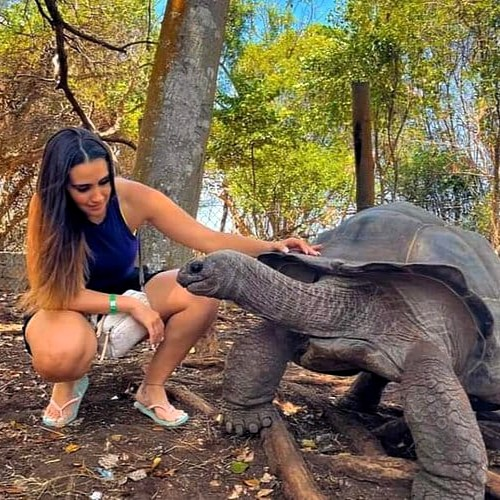
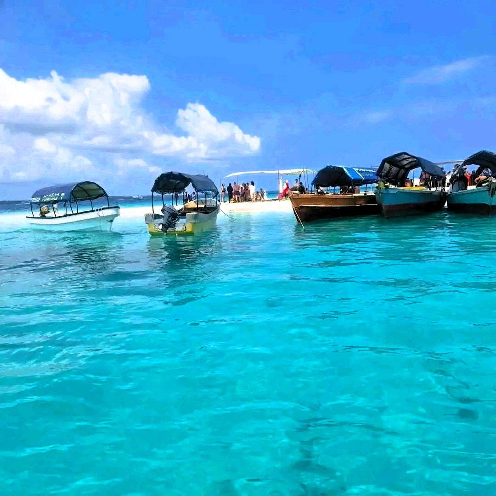
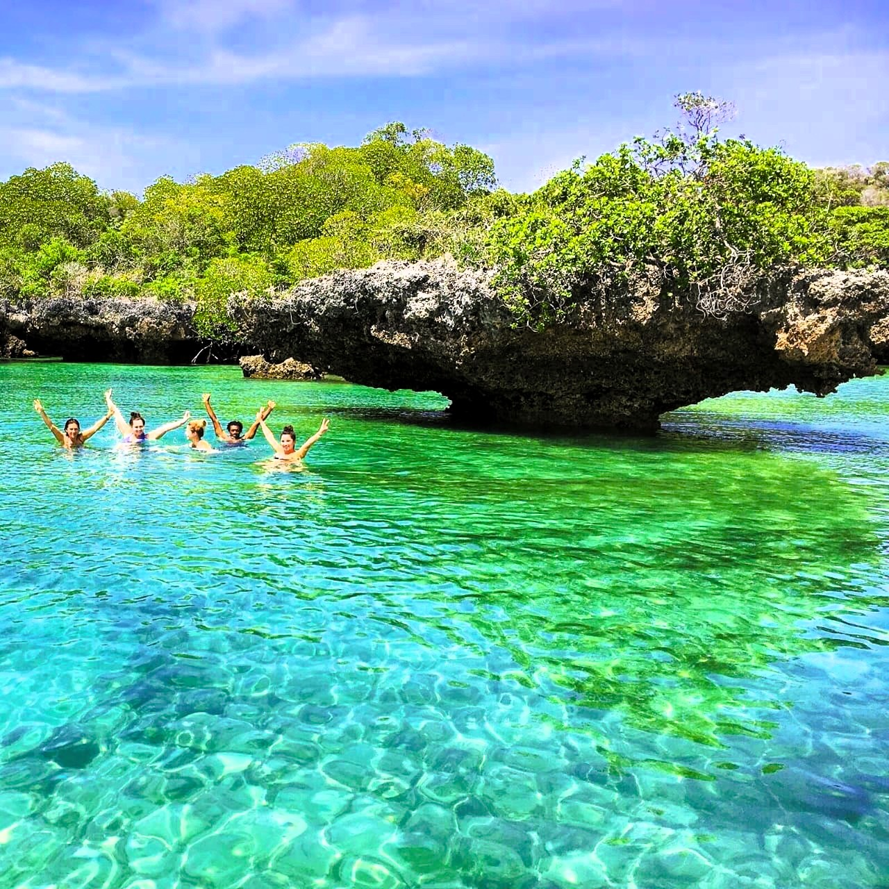
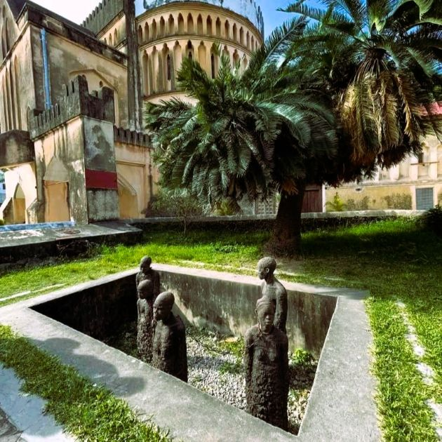
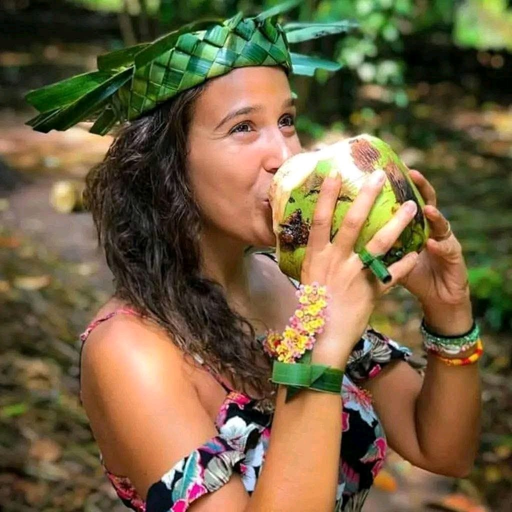
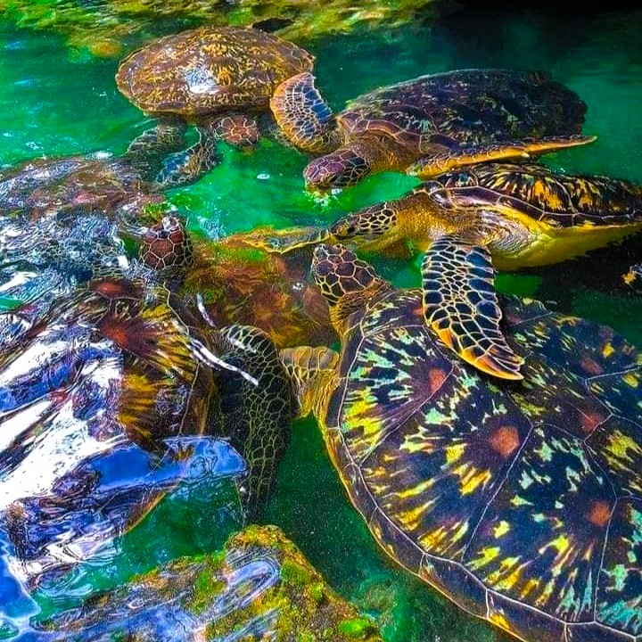
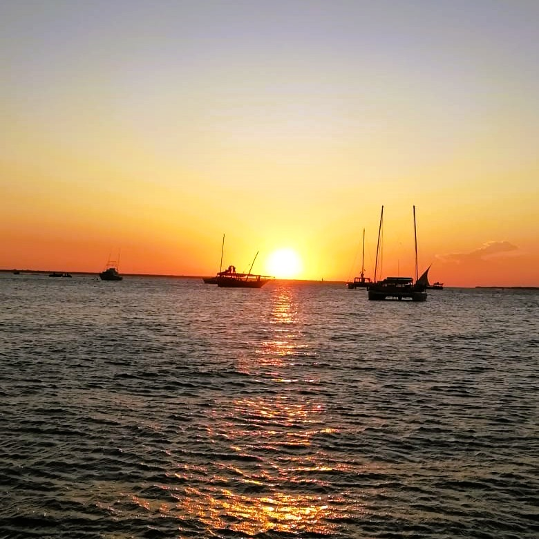
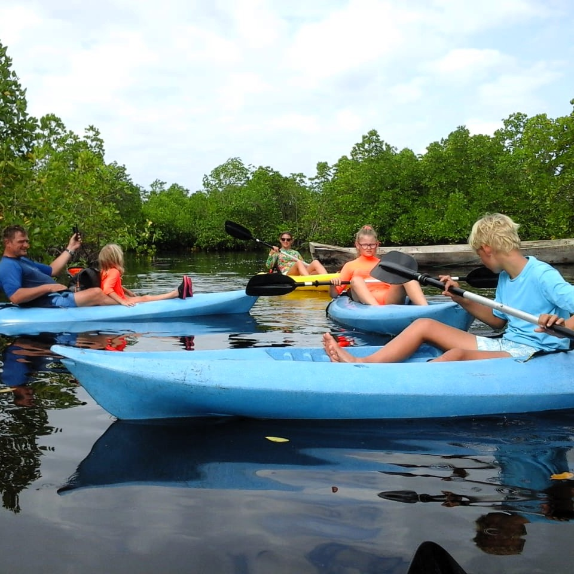
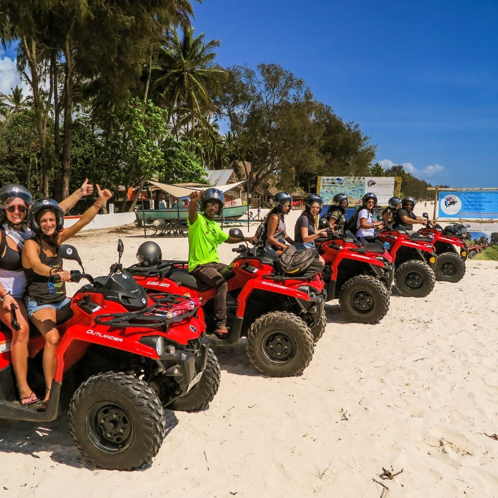

Ocean lovers
Snorkeling, sandbanks, dhow sailing and island escapes.

Choose your experience
Start with one favorite or ask our team to combine several highlights into a well-paced private itinerary.

OceanClear-water snorkeling and an ocean journey around one of Zanzibar’s best-known marine areas.

IslandTravel by boat to Changuu Island for heritage, coastal scenery and its famous tortoise sanctuary.

BeachRelax, swim and enjoy the open ocean atmosphere on a beautiful sandbank near Stone Town.

SignatureA classic full-day ocean adventure with dhow sailing, swimming, snorkeling and island scenery.

CultureDiscover winding streets, historic architecture, markets and the stories behind Zanzibar’s old city.

FlavorsSee, smell and taste the crops that shaped Zanzibar’s identity while learning from local hosts.
 Nature
Nature
Explore Zanzibar’s best-known forest habitat and look for the endemic red colobus monkey.

WildlifeVisit Nungwi and experience its natural aquarium setting on Zanzibar’s lively north coast.

SunsetEnd the day on the water aboard a traditional dhow as Zanzibar’s coast turns golden.
A balanced day combining Zanzibar’s flavors, island wildlife and historic capital.

AdventureAn active south-coast day combining calm-water kayaking, forest nature and dramatic beach scenery.

AdventureCombine a local cultural experience with a more energetic way to explore Zanzibar’s landscapes.
Choose by travel style
Snorkeling, sandbanks, dhow sailing and island escapes.
Stone Town, spice farms, villages, markets and local cooking.
Jozani Forest, mangroves, caves and coastal landscapes.
Kayaking, diving, fishing, horse riding and quad-bike experiences.
Before you book
Share your hotel and area so transport arrangements can be confirmed clearly.
Start times may be adjusted for location, tide, weather and the day’s activities.
We provide activity-specific guidance so you arrive comfortable and prepared.